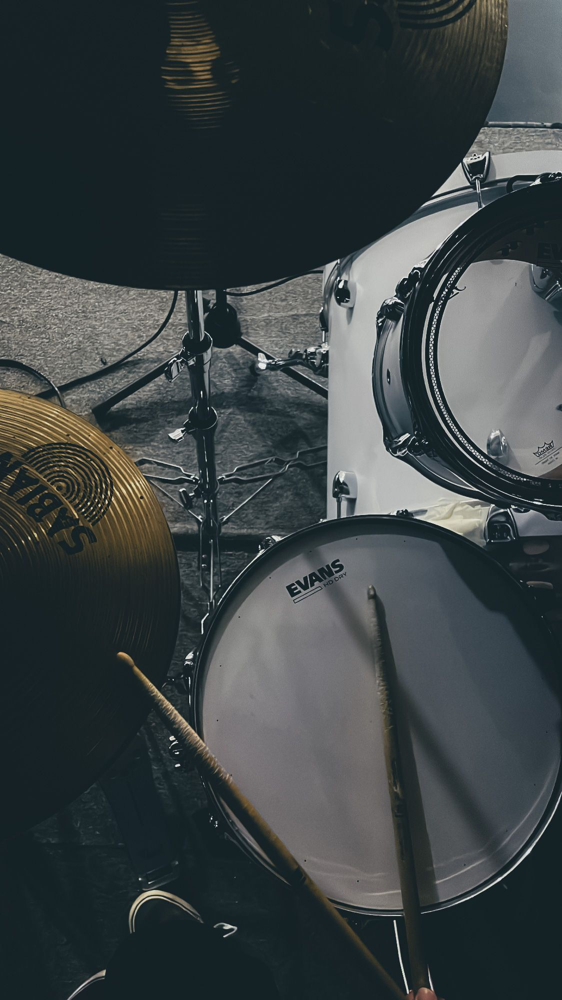

La música que nos acompaña
Hay canciones para cada momento: estudiar, salir con amigos o relajarnos. Aquí compartiremos nuestros artistas favoritos y descubriremos nuevos sonidos.

Un blog para compartir nuestra pasión por la música.
Hay canciones para cada momento: estudiar, salir con amigos o relajarnos. Aquí compartiremos nuestros artistas favoritos y descubriremos nuevos sonidos.

Nos gusta escuchar pop, rock y música electrónica. Cada género tiene algo diferente que nos hace disfrutarlo.